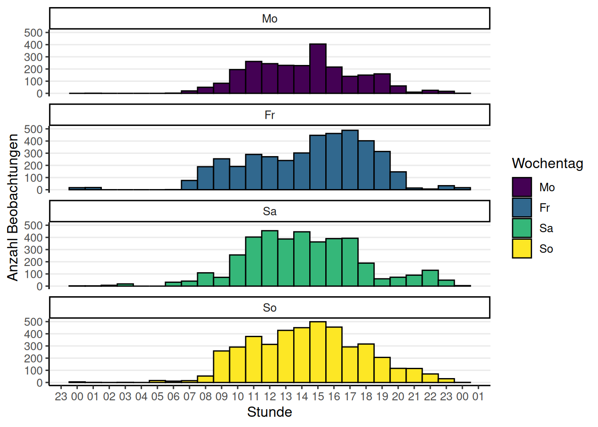

City Nature Challenge 2024: Wien
Allgemeine Information
Insgesamt wurden 1344 Beobachtungen von 84 Beobachterinnen und Beobachtern hochgeladen. Das ergibt einen Mittelwert von 16 Beobachtungen pro Beobachter bzw. Beobachterin und einen Median von 6. Auf Spezies-Ebene wurden 485 Beobachtungen hochgeladen.

Beobachtungskarte
Fun Facts
User (auch bekannt als Birder) miaausch hat 15 Vogelbeobachtungen hochgeladen - mehr als jede/r andere. Besonders liebt der User bzw. die Userin alexcm die Art Orchis militaris, die er/sie bereits 4 Mal hochgeladen hat. Das Taxon mit dem längsten Namen ist Dryophilocoris flavoquadrimaculatus, das 35 Zeichen lang ist.
Top Beobachter/innen
In dieser Liste werden auch doppelte Beobachtungen gezählt, jedoch sollte dies nicht als Tipp betrachtet werden, um an erster Stelle zu stehen.
Top Bestimmer/Innen
Die erhobenen Beobachtungen werden erst durch die unerschöpfliche Arbeit der Bestimmer/innen zu wertvollen Daten. An dieser Stelle ein großes Dankeschön an alle Bestimmer/innen ohne euch wäre iNaturalist nicht das, was es heute ist.
Top Beobachter/innen mit den meisten unterschiedlichen Arten
Nur Beobachtungen zumindest auf Spezies-Ebene und Research-Grade werden gezählt.
Top Taxa (Spezies-Ebene)
In dieser Liste sind die am häufigsten beobachteten Taxa auf Spezies-Ebene aufgeführt, die bereits identifiziert wurden. Es ist jedoch nicht erforderlich, dass diese von einer zweiten Person bestätigt wurden, um den Forschungsstandard (Research-Grade) zu erreichen.
Unique Taxa mit Research-Grade
Besonders erfreulich sind natürlich immer einzigartige Funde, die nur von einer Person in der Challenge hochgeladen wurden. In dieser Liste müssen jedoch alle Spezies von einer zweiten Person bestätigt werden, um den Forschungsstandard (Research-Grade) zu erreichen.
Beobachtungs Qualität
iNaturalist unterteilt die Beobachtungsqualität in drei Kategorien. Die Kategorie “causal” umfasst Beobachtungen, bei denen mindestens eines der folgenden Elemente fehlt: das Datum der Beobachtung, der Beobachtungsort oder ein Foto (oder Tonaufnahme). Die Kategorie “needs_id” wird angezeigt, bis mindestens zwei Personen eine Spezies für diesen Upload einstimmig bestimmt haben, ohne Widerspruch. Die letzte und wertvollste Kategorie ist “research”, die bestätigte Beobachtungen auf Spezies-Ebene umfasst.

Beobachtungen Phylum

Insecta - Ordnungen

Beobachtungen mit Konflikt Bestimmungen
Rote Liste
Anmerkung: Keine Ahnung wie aktuell meine Rote Liste ist.